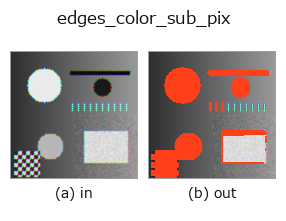

contour op• Data kinds: color → contour
• Call: fullseye.apply(img, "edges_color_sub_pix", a=0.5, b=0.5) (the 2-D model is one image plus two scalar knobs a,b∈[0,1])
• HALCON equivalent: edges_color_sub_pix (the HALCON reference is a useful guide to its meaning and parameters)

*The figure is the actual output on a synthetic 128×128 input. Left: input, right: output. Point clouds are drawn as a top-down scatter (brightness = z), 1-D series as a line plot, volumes as the maximum-intensity projection along z, videos as the middle frame, complex images as magnitude; return values that are not pictures are shown as the values themselves.*
Sweeping knob a (0.1 / 0.5 / 0.9, the other knob at its default):
▸ edges_color_sub_pix: knob a sweep (docs site)
*Knob b does not change the output (measured: identical at 0.1 / 0.5 / 0.9).*
Stages (the ops that come before → this op, left to right):
▸ edges_color_sub_pix: stages (docs site)
On other images (synthetic scene / photo / coins. Top row: inputs, bottom row: their outputs. Knobs at default):
▸ edges_color_sub_pix: other inputs (docs site)
Extracts connected components on color edges as contours. Claimed to correspond to HALCON's `edges_color_sub_pix (extracts subpixel-accurate color edges with Deriche/Shen/Canny), but **the implementation is not subpixel-accurate** -- it thresholds the gradient magnitude from _edges_color into a binary image, connects it with 8-connectivity labeling (scipy.ndimage.label`), and returns the resulting pixel coordinates directly as contour points (all coordinates lie on the integer grid). Components with fewer than 3 pixels are discarded.
> The detailed description below is the original text — the summary and the headings are translated.
a はしきい値 `0.15 + 0.5 * a` を振る（大きいほど輪郭が減る）。b は
未使用。戻り値は `{"shape":..., "cs": [輪郭ごとの (N,2) 座標配列]}`。
• gallery2d_contour_measure family guide
• Sample-data catalog (download URLs / licences) — 2-D uses skimage.data (BSD/public domain) plus synthetic images; 3-D lists download URLs for real data sources (Stanford, PDS, …).
• Operator provenance and references — the sources of the research/methods this op family came from.
• The canonical algorithm (author, year) and its uses are named in the family usage guide above.
The program below has been verified to run (same input as the figure). In Studio's help this block becomes buttons that load and run it on the spot.
cfa_to_rgb 0.50 0.50 edges_color_sub_pix 0.50 0.50
▸ Load this pipeline · Load & run
• gallery2d_contour_measure — py -3.11 examples/gallery2d_contour_measure.py
contour as input)identity · select_contours · smooth_contours · fit_line_contours · contours_to_region · count_contours · total_length · select_contours_xld
contour)select_contours · smooth_contours · fit_line_contours · contours_to_region · sk_find_contours · edges_sub_pix · lines_gauss · select_contours_xld
*Provenance: ops.py — 2D operator registry. This per-op note is generated by tools/opdocs.py md (do not hand-edit).*
© 2026 Kazufumi Furuse — Fullseye operator documentation. Licensed under Apache-2.0.
{kind=link}
{kind=link}
{kind=link}